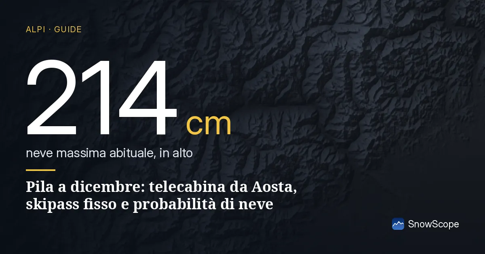

Pila a dicembre: telecabina da Aosta, skipass fisso e probabilità di neve
Pila si trova appena sopra Aosta, raggiungibile con la telecabina dalla città; la neve a dicembre dipende dall'altitudine. Le piste basse verso 1.533 m possono avere poca neve a inizio mese, mentre quelle verso 2.723 m hanno una media di 80 cm. Con uno skipass giornaliero a 60,00 EUR per tutta la stagione, il budget per il weekend è semplice.
Le previsioni neve in tempo reale per Pila nell'app SnowScopeAltezza neve, allerte powder e mappa 3D, gratis.
Da Aosta alle piste
Se arrivi in auto per il weekend, puoi fermarti ad Aosta e prendere la telecabina direttamente fino a Pila. L'area sciistica conta 56 km di piste mappate e 16 impianti, che vanno dai 1.533 m della base ai 2.723 m della cima, per un dislivello di 1.190 m.
Oggi, 13 novembre 2026, le stime sulla neve indicano un inizio precoce: 0 cm alla base (1.533 m), 4 cm a metà montagna (2.128 m) e 14 cm in cima (2.723 m). Nei prossimi sette giorni, le stime prevedono 26 cm di neve fresca alla base, 53 cm a metà montagna e 70 cm in cima, mentre le previsioni a due settimane per la zona intermedia e oltre, dal 13 al 26 novembre, variano tra 52 e 74 cm.

Un prezzo unico per tutto l'inverno
Sul sito ufficiale, lo skipass giornaliero adulto costa 60,00 EUR a tariffa fissa per tutta la stagione, dal 28 novembre 2026 all'11 aprile 2027. Non serve cercare date fuori stagione per evitare i prezzi alti del weekend.
Per soggiorni più lunghi, lo skipass adulto di 6 giorni per l'inverno 2026-27 costa 322,00 EUR. Avere una tariffa giornaliera unica rende facile pianificare il budget per un weekend di dicembre prima di partire.
Probabilità di neve in base all'altitudine
Nel nostro storico di 46 inverni passati (1980-81 al 2025-26), la base degli impianti (1.533 m) è spesso scarsa a dicembre. Ha una media di 34 cm in un dicembre tipico (16 cm in un inverno magro, 60 cm in uno abbondante) e raggiunge 30 cm o più nel 41 %, 52 %, 59 % e 78 % degli inverni passati nelle quattro settimane di dicembre, con 50 cm o più solo nel 9 %, 15 %, 26 % e 30 % degli inverni passati.
A metà montagna (2.128 m) la media è di 45 cm (21 cm magro, 78 cm abbondante), raggiungendo 30 cm o più nel 50 %, 76 %, 85 % e 89 % degli inverni passati e 50 cm o più nel 26 %, 33 %, 41 % e 59 % degli inverni passati. La cima (2.723 m) ha una media di 80 cm (37 cm magro, 138 cm abbondante), raggiungendo 30 cm o più nell'87 %, 93 %, 98 % e 98 % degli inverni passati e 50 cm o più nel 57 %, 78 %, 89 % e 89 % degli inverni passati. Per una copertura affidabile, punta da metà dicembre in poi e scia da metà montagna fino alla cima.
Pila a confronto con La Thuile
La Thuile (Francia / Italia) ha un'area sciistica più grande con 79 km di piste e 17 impianti tra 1.468 m e 2.608 m, un dislivello di 1.140 m. Nel nostro storico, le medie di dicembre sono più alte: 44 cm alla base (1.468 m, 17 cm magro, 92 cm abbondante) e 67 cm a metà montagna (2.038 m, 31 cm magro, 129 cm abbondante), dove 30 cm o più si raggiungono nel 78 %, 91 %, 100 % e 100 % degli inverni passati.
In cima (2.608 m), La Thuile ha una media di 98 cm (47 cm magro, 173 cm abbondante), raggiungendo 50 cm o più nel 76 %, 85 %, 93 % e 98 % degli inverni passati nelle quattro settimane di dicembre, insieme al 48 %, 67 %, 76 % e 87 % degli inverni passati per 30 cm o più alla base. La Thuile offre probabilità di neve migliori a dicembre, anche se non abbiamo verificato i prezzi sul sito ufficiale.
Tendenze su 46 inverni passati
Tra i primi 15 inverni (1980-81 al 1994-95) e gli ultimi 15 (2011-12 al 2025-26), la media di metà dicembre a Pila è leggermente aumentata: da 31 cm a 36 cm alla base, da 42 cm a 49 cm a metà montagna e da 74 cm a 84 cm in cima.
Gli inverni variano molto. L'inverno scorso (2025-26) ha avuto una media di 27 cm alla base, 39 cm a metà montagna e 74 cm in cima, mentre il dicembre più magro (2015-16) è sceso a 14 cm, 16 cm e 26 cm contro il dicembre più abbondante (1982-83) a 67 cm, 88 cm e 158 cm. La neve duratura inizia di solito verso il 10 ottobre in cima e il 26 ottobre alla base, raggiungendo picchi stagionali di 81 cm, 116 cm e 214 cm.
Consigli per sciatori
- Acquista lo skipass giornaliero adulto a 60,00 EUR o quello da 6 giorni a 322,00 EUR sul sito ufficiale, poiché la tariffa giornaliera resta fissa dal 28 novembre 2026 all'11 aprile 2027.
- Punta al periodo 15-21 o 22-28 dicembre per una copertura migliore, quando a metà montagna (2.128 m) si raggiungono 30 cm o più nell'85 % e 89 % degli inverni passati.
- Resta sugli impianti alti vicino a 2.723 m se vai nelle prime due settimane di dicembre, dove 30 cm o più si verificano nell'87 % e 93 % degli inverni passati.
- Controlla il bollettino valanghe prima di andare fuori pista, specialmente dopo le prime tempeste come previsto dai 52 a 74 cm a due settimane per la zona intermedia e oltre.
Altre mappe (siti esterni)
Riferimenti e crediti
- Pila, official daily ski pass prices 2026-27 pila.it/en/skipass-pila/daily-skipass/
- SnowScope, December snow at three heights and today's snow map snowscope.app/
Su questi numeri
Numeri della neve: storico neve SnowScope, 46 inverni passati (1980-81 - 2025-26) a tre quote di ogni località (un modello del passato corretto per la quota: una stima per un'area, non misure della località); dati di dicembre calcolati dalle altezze giornaliere di quegli inverni. Neve attuale e tendenza a due settimane: previsioni SnowScope (tendenza da ECMWF e GFS, un intervallo, non una promessa). Impianti e piste: mappatura OpenSkiMap. Prezzi: le pagine ufficiali qui sotto, lette il 2026-11-13; i prezzi possono cambiare, verificare prima di prenotare.
Bollettini valanghe ufficiali: AINEVA – Associazione Interregionale Neve e Valanghe
Cita questo articolo
Per ricerca, didattica o stampa: numeri e grafici sono liberamente riutilizzabili con licenza CC BY 4.0 citando così.
SnowScope (2026), Pila a dicembre: telecabina da Aosta, skipass fisso e probabilità di neve, https://snowscope.app/blog/it/2026/11/pila-aosta-december-ski-flat-price-snow-2026.html, consultato il 2026-11-14
SnowScope (Atlas Labs). (2026, November 14). Pila a dicembre: telecabina da Aosta, skipass fisso e probabilità di neve. SnowScope snow reports. https://snowscope.app/blog/it/2026/11/pila-aosta-december-ski-flat-price-snow-2026.html
BibTeX
@misc{snowscope2026pilaaostadecemberskiflat,
author = {{SnowScope (Atlas Labs)}},
title = {Pila a dicembre: telecabina da Aosta, skipass fisso e probabilità di neve},
year = {2026},
month = nov,
howpublished = {\url{https://snowscope.app/blog/it/2026/11/pila-aosta-december-ski-flat-price-snow-2026.html}},
note = {Published 2026-11-14 13:29 UTC; accessed 2026-11-14}
}· CC BY 4.0 · Metodi, dati e strumenti →
Pila: neve e temperatura per quota, quest'inverno vs lo scorso (strumenti) →
Segui Pila
Gratis: un messaggio quando arriva la neve e il meteo ogni mattina.